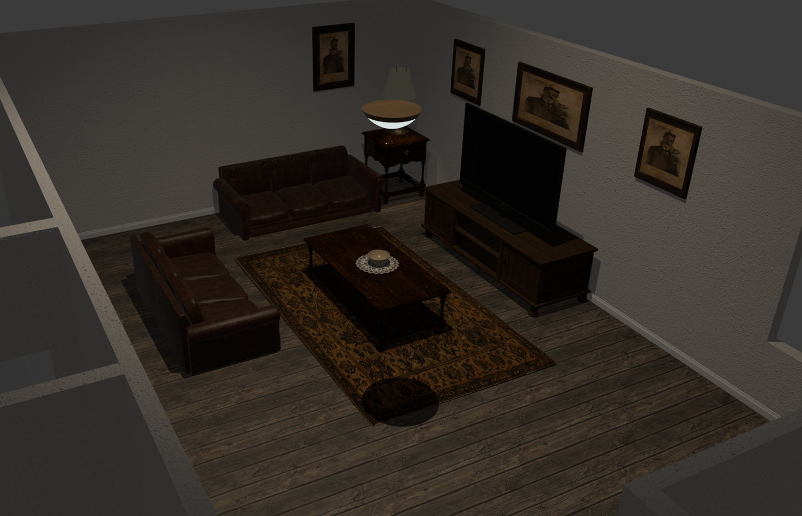
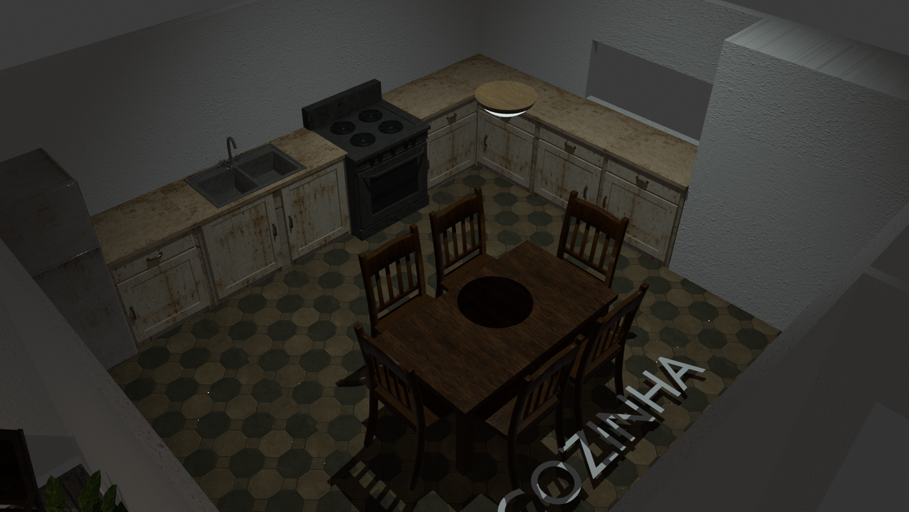

Two more rooms
The hall was the room that had to teach you the rules. These two are the rooms that have to make you believe somebody used them.
A living room is easy to fill and hard to make honest. Two leather sofas facing a television nobody is going to switch on. A rug worn where feet crossed it. Four portraits on the wall, all of the same man, hung by someone who wanted him looked at. The lamp on the side table is the only thing still working, and it only reaches as far as the coffee table.
The kitchen is the opposite problem. Nothing in it is decorative — a sink, a stove, cabinets gone to rust at every edge a hand would touch. Six chairs around a table set for a family that is not here. It is the room where the house stops being a set and starts being somewhere people ate dinner.
Both are lit the same way the hall is: one source, and everything past it left alone.

